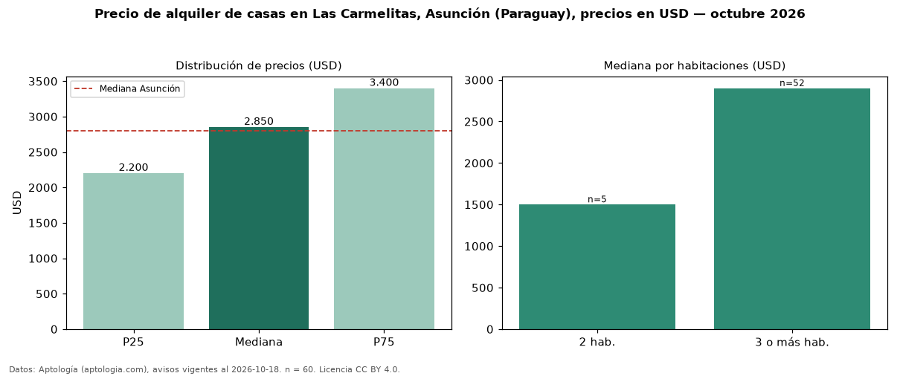

Precio de alquiler de casas en Las Carmelitas, Asunción (Paraguay), precios en USD — octubre 2026
USD 2.850 al mes es el canon mediano de casas en alquiler en Las Carmelitas, Asunción (Paraguay) (n = 60 avisos). Prácticamente coincide con la mediana de Asunción para casas (USD 2.800). Por metro cuadrado, la mediana es USD 8,17/m² al mes (n = 48 avisos con área), 15 % por encima de Asunción (USD 7,11/m²). Con el precio por m² de venta del mismo segmento (USD 1.472/m²), la rentabilidad bruta implícita es 6,7 % anual (aproximación con medianas de ofertas distintas). El área mediana anunciada es 364 m². El segmento con más oferta es el de 3 o más habitaciones (52 avisos, mediana USD 2.900); pasar de 2 habitaciones a 3 o más habitaciones cambia la mediana +93 %. Por precio mediano es el puesto 9 de 16 barrios de Asunción con al menos 30 avisos de casas en alquiler (USD): en la franja media. La mitad central de los avisos va de USD 2.200 a USD 3.400 (razón 1,5), una dispersión moderada. Datos: Aptología (aptologia.com), CC BY 4.0 — https://www.aptologia.com/py/alquiler/asuncion/las-carmelitas. Archivos: PDF, CSV con las cifras y gráfica PNG.

| Avisos únicos | 60 |
|---|---|
| Percentil 25 | COP 2.200 |
| Mediana | COP 2.850 |
| Percentil 75 | COP 3.400 |
| Mediana por m² | COP 8 |
Fuente: avisos vigentes de portales inmobiliarios recopilados por Aptología, deduplicados (mínimo 30 avisos únicos por celda). Precios pedidos, no cerrados. Fecha: 2026-10-18.